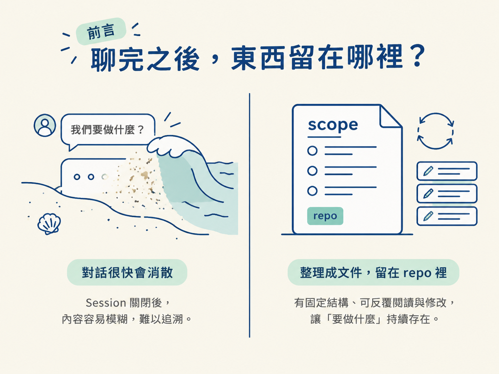
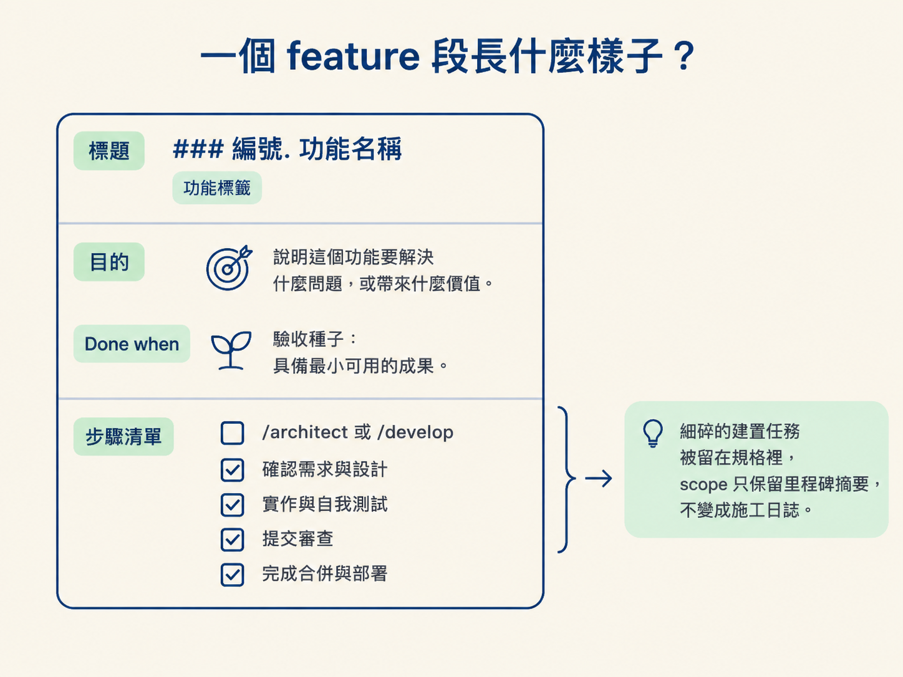
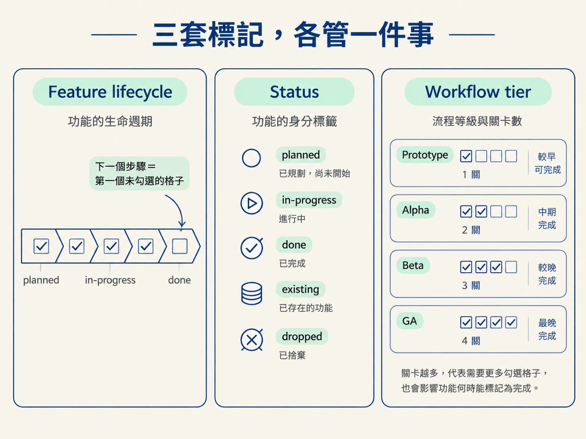

看完這一節，你應該能認出 scope 檔案的兩段式結構：先用 At a glance 表總覽，再用依 phase 分組的 feature 段補充細節。你也會知道 feature lifecycle、status、workflow tier 這三套標記，各自在文件裡負責什麼。
想像你週末晚上突然有個 side project 的點子。你和 AI 聊了半小時，功能、先後順序，以及還沒決定的地方都談過一輪。當下你很清楚下一步要做什麼；但 session 關掉，隔天再回來，那份清楚可能只剩模糊的印象。
你得重新解釋一次，而且這次的順序可能和昨天不一樣。問題不一定是你想得不夠清楚，而是想法一直只停留在對話裡。對話像沙灘上的字，當下看得見，浪一來就散了。
/scope 要處理的正是這件事：把「要做什麼」從對話裡整理出來，寫成一份有固定形狀的文件，留在 repo 裡，之後可以反覆閱讀與修改。
這一節先不談怎麼執行指令，而是先看懂這份文件。因為你後續每一次的規劃判斷，都是在 scope 的結構與標記上做選擇。

scope 是一份粗略、會持續長大的計畫，預設放在 docs/scope/ 底下。它回答四件事：
它刻意不回答「要怎麼做」。例如，它不挑框架、不選資料庫，也不決定要不要使用 ORM。
把工具選擇留在 scope 之外，是有理由的。工具會過時、會換代；一份寫滿當代工具名稱的計畫，半年後就可能開始發霉。scope 只描述產品要長什麼樣子，因此可以活得久一點。真正牽涉到工具的決定，留給 /architect 在每個功能上個別處理。
scope 只有兩個主要部分。
第一部分是 At a glance 表，欄位包含「編號、功能、階段、狀態」。你可以用幾秒鐘看完專案有幾件事，以及每件事目前走到哪裡。
第二部分是依 phase 分組的 feature 段。每個功能各有一個段落，詳細內容寫在自己的區塊裡。
這裡有個容易忽略、但很重要的設計：建置順序就是段落順序。因此不需要再維護一份獨立的「build order」清單，也不用擔心兩份清單逐漸對不起來。少一份需要同步的文件，就少一個出錯的位置。
| # | Feature | Phase | Status |
|---|---|---|---|
| 1 | Stack & architecture | Foundation | in-progress |
| 2 | Coding standards & tooling | Foundation | planned |
| 3 | Data model | Foundation | in-progress |
| 4 | Core standup loop | Slice 1 | planned |
每個功能段的標題是 ### 編號. 功能名稱。標題後面只放真正有資訊的短標籤，例如 needs a decision、功能層級的切法覆寫，或流程等級覆寫 · GA。
不要把標題寫成「名稱 | 優先序 | 繼承 | …」這種用直線分隔的欄位列。那只是把表格硬塞進標題，讀起來既不清楚，也讓標題失去辨識功能。
標題底下有三樣東西。
Done when:，寫出可以觀察到的完成結果。它是驗收條件的種子，之後由 /architect 發展成規格；現在不需要把完整規格塞進 scope。還沒有設計過的功能，先只有一個入口格。需要做決定時，入口是 /architect <功能>；不需要做決定時，則直接是 /develop <功能>。
規格捕捉完成後，/architect 會把這個功能補成「已設計」的形狀：
Design it。Build it: /develop <功能>。Verify it 與 Test it。細碎的建置任務全部留在規格自己的建置計畫裡，不搬進 scope。scope 只保留里程碑的摘要，避免這份總覽變成塞滿待辦事項的施工日誌。

文件裡會看到三種標記。它們看起來都像是在描述「進度」，但其實負責的問題不同。
Feature lifecycle 描述一個功能在工作流程裡走到哪一步。它從 planned 開始；規格捕捉完成後進入已設計，接著依序經過建置中、已驗證，最後到 done。
每一格由不同階段推進，而「下一個步驟」永遠是第一個尚未勾選的格子。這讓文件不必另外解釋目前該做什麼：往下看，找到第一個空格就好。
Status 出現在表格和標題旁，用來描述功能的身分或狀態。除了 planned、in-progress、done，還有兩個容易混淆的狀態：
existing：這個功能在導入工作流程之前就已經存在。dropped：這個功能已經移出範圍，但保留在文件裡作為歷史。done 不等於 existing。done 表示這套流程親手建置並驗證過；existing 則表示它早於這套流程存在，/develop 和 /sync 都不會去動它。
如果功能被移出範圍，就設為 dropped，不要直接刪除。被捨棄的決定本身也是專案歷史的一部分，未來回頭看時，知道「做過什麼決定」和知道「現在要做什麼」一樣有價值。
Workflow tier 是流程等級。一個專案只有一個預設值，寫在檔案開頭的 **Workflow:** 行。個別功能若要偏離預設值，才在標題旁加上標籤，例如 · GA。
它決定的是 /develop 之後還要跑哪些關卡：
Prototype：不再執行其他流程。Alpha：多執行 /check verify。Beta：在 Alpha 的基礎上再執行 /test。GA：再加入一次換模型的 /check review 與 /document。workflow tier 也會決定什麼時候算完成：
Prototype：建置後就算完成。Alpha：通過驗證後才算完成。Beta 和 GA：通過測試後才算完成。所以流程等級不是一個抽象的品質分數。它會直接改變 scope 上需要勾選的格子，也會改變功能何時能標成完成。

docs/scope/ 屬於 /scope；規格則由 /architect 管理，放在 docs/specs/。兩個階段的檔案要分開。/scope 不會去寫規格、程式碼或 AGENTS.md。
檔案形狀會隨產品大小調整。
小型產品只需要一個檔案：docs/scope/scope.md。當內容多到一眼掃不完，大約有十幾個功能，而且分屬幾個明顯不同的領域時，才升級成史詩拆分：
scope.md 改名為 index.md。index.md 保留總表，以及每個領域的狀態彙總。<領域>.md。原則是按需升級，不要提早拆分。檔名一律使用語意名稱，不使用編號。
scope 也必須一直保持粗略而小。如果某個領域檔案長到讀不完，通常代表你把功能切得太細，或把建置任務倒進去了。該做的是重新切清楚功能邊界、把 intent 寫得更緊，而不是繼續讓文件膨脹。
scope 是一份放在docs/scope/的活計畫，採用兩段式結構：先用 At a glance 表掃一眼，再讀依 phase 分組的功能段。段落順序就是建置順序。每個功能段包含 intent、一行 Done when，以及 checkbox 步驟；尚未設計的功能只有一個入口指令。三套標記各管一件事：feature lifecycle 管流程走到哪裡，status 管功能的身分（planned / in-progress / done / existing / dropped），workflow tier 管/develop之後要跑幾關，以及什麼時候算 done。計畫要一直保持粗而小，並刻意不碰工具選擇。
現在你已經認得這份文件的形狀，但 scope 不會自己長出內容。下一節要看 /scope 如何從你的一句點子，判斷你其實是要 plan、replan，還是 add，接著把整輪規劃走完。